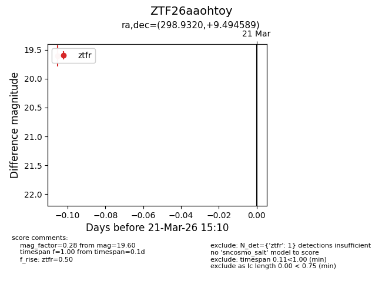
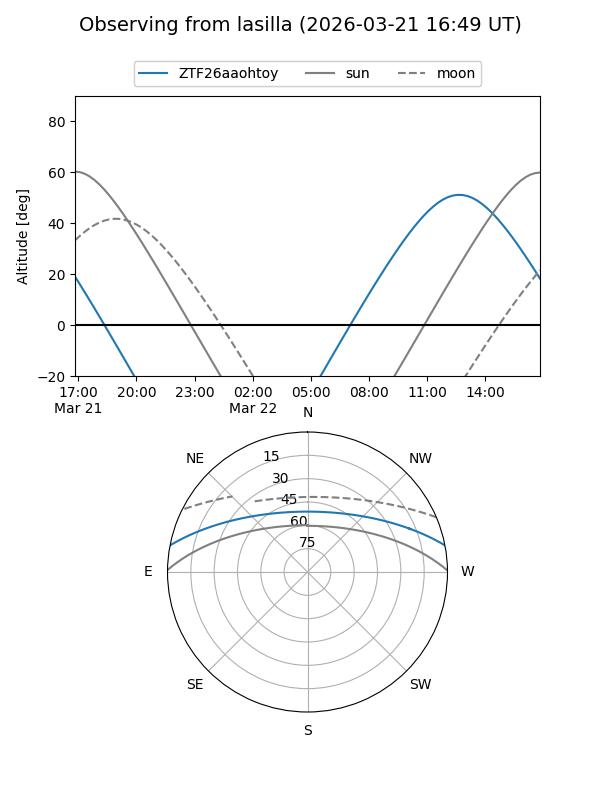
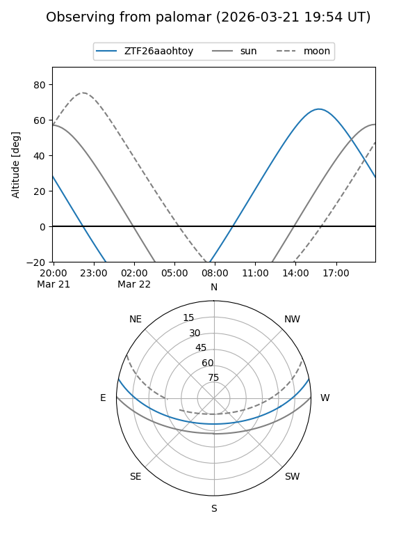

ZTF26aaohtoy
Target ZTF26aaohtoy at 2026-03-21 15:12
Aliases and brokers:
FINK: link
Lasair: link
ALeRCE: link
alt names
ZTF26aaohtoy (ztf,fink_ztf)
Coordinates:
equatorial (ra, dec) = 298.9320,+9.49459
equatorial (HMS+DMS) = 19:55:43.67,+09:29:40.52
galactic (l, b) = (48.9071,-9.66018)
Flags:
Photometry:
last ztfr=19.60
1 ztfr detections
Lightcurve

Visibility


Additional plots